Nœuds de pipeline : intégrés et plugins¶
Un pipeline de modèle virtuel ou de middleware est un graphe. Chaque nœud lit des valeurs sur ses ports d'entrée et en produit sur ses ports de sortie. Le moteur exécute les nœuds dans l'ordre des liaisons, du nœud generator jusqu'au nœud sink.
Cette page décrit chaque nœud livré avec Xolo : ce qu'il fait, ses ports, ce qu'on configure, et quand s'en servir. Pour écrire un plugin sur mesure, voir le guide de développement.

La palette de gauche liste les nœuds intégrés puis les plugins chargés. Le panneau de droite configure le nœud sélectionné et rappelle ses ports.
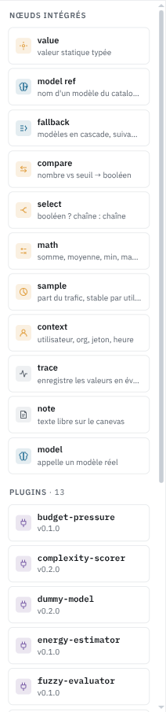
Les ports¶
Un port a un type. L'éditeur n'accepte de relier qu'une sortie et une entrée de même type.
| Type | Contenu |
|---|---|
request |
La requête de complétion, messages compris |
response |
La réponse du modèle |
string |
Une chaîne, le plus souvent un nom de modèle |
number |
Un nombre, le plus souvent un score entre 0 et 1 |
boolean |
Vrai ou faux |
Un port d'entrée marqué requis doit être connecté, sinon le bandeau en bas de l'éditeur le signale et le pipeline ne s'enregistre pas. Un port d'entrée non requis peut rester libre. Le nœud applique alors sa valeur de configuration, ou ignore ce port.
Un nœud sans port d'entrée s'exécute au début. C'est le cas de value, model_ref, sample et context.
Chaque nœud intégré accepte un libellé libre, dans le panneau de droite. Quand il est renseigné, la carte l'affiche à la place de son résumé calculé. « modèle selon complexité » sur un select ou « soirée ? » sur un compare disent ce que le nœud décide, là où « > 0,6 » dit seulement comment il est réglé. Sur un trace, le libellé devient aussi le message de l'événement.
Nœuds intégrés¶
Ils font partie du serveur. Ils n'exigent aucun binaire de plugin et se comportent de la même façon sur toutes les installations.
generator et sink¶
generator émet la requête entrante sur son port request. sink reçoit la réponse finale sur son port response. Tout pipeline commence par l'un et finit par l'autre. On ne peut pas les supprimer.
model¶
Appelle un modèle réel ou virtuel. Le nom vient du port model_name s'il est connecté, sinon du champ Modèle appelé, qui propose la liste des modèles de l'organisation.
Ports : request (requis), model_name en entrée, response en sortie.
Si le nom désigne un modèle virtuel, son pipeline s'exécute à l'intérieur de celui-ci. Xolo détecte les cycles et refuse un modèle virtuel qui s'appelle lui-même.
La case Passthrough remplace le modèle fixe par celui que l'appelant a demandé. Elle sert aux middlewares, qui s'appliquent à des modèles qu'ils ne connaissent pas à l'avance.
model_ref¶
Émet sur model_name le nom d'un modèle choisi dans une liste. C'est un nœud value qui connaît les noms de modèles.
Préférez-le à value chaque fois qu'une chaîne représente un modèle. On ne se trompe pas de nom, et l'aperçu du pipeline montre un modèle plutôt qu'une chaîne quelconque. En contexte personnel, la liste inclut vos modèles personnels sous la forme ~/nom et les modèles de vos organisations sous la forme slug/nom.
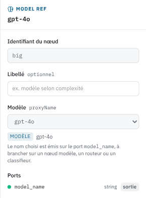
model_fallback¶
Un nœud model avec une liste ordonnée de modèles réels. Le premier est appelé. S'il échoue, erreur du fournisseur, dépassement de délai, code 429, le deuxième prend le relais, puis le troisième.
Ports : request (requis), model_name en entrée, response en sortie. Un model_name connecté passe avant la liste configurée.
Le repli n'a lieu que si l'appel échoue avant que la réponse ne commence. Une fois le flux entamé, changer de modèle en cours de route collerait deux réponses différentes, donc l'erreur remonte telle quelle.
La consommation est attribuée au modèle qui a répondu, pas au premier de la liste. Les modèles virtuels ne sont pas acceptés comme candidats. Ils portent leur propre pipeline, dont les nœuds de post-traitement ne pourraient pas s'exécuter depuis une chaîne de repli.
Si vous n'ajoutez qu'un seul nœud à un pipeline existant, c'est probablement celui-ci. Une passerelle sans repli renvoie l'erreur du fournisseur à l'utilisateur au premier incident.
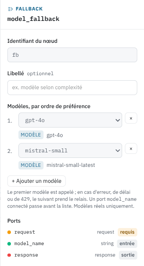
value¶
Émet une valeur fixe. On choisit le type, string, number ou boolean, et la valeur.
Sert à alimenter un port qu'on veut fixer sans le calculer. Dans le pipeline « auto » fourni en exemple, la sensibilité énergétique est un value à 0,6 branché sur le fuzzy-evaluator.
compare¶
Compare value à un seuil et émet result, un booléen.
Ports : value (number, requis), threshold (number) en entrée, result (boolean) en sortie. Configuration : l'opérateur (gt, gte, lt, lte, eq, ne) et le seuil, utilisé quand le port threshold n'est pas connecté.
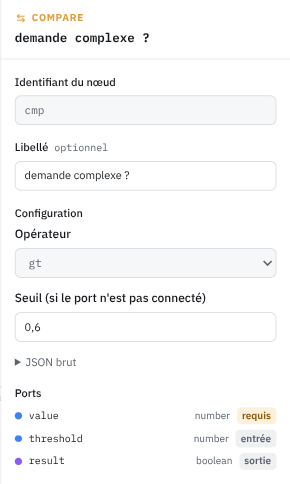
select¶
Émet when_true ou when_false selon condition.
Ports : condition (boolean), when_true et when_false (string), tous trois requis, value (string) en sortie. Rien à configurer.
compare suivi de select remplace l'essentiel des scripts de routage. Par exemple : complexity du complexity-scorer entre dans compare avec le seuil 0,6, result entre dans select, deux model_ref remplissent when_true et when_false, et value va sur le model_name du nœud model. Quatre nœuds, aucune ligne de Tengo, et le graphe se lit d'un coup d'œil.
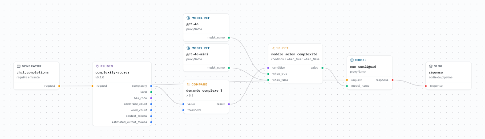
math¶
Combine jusqu'à quatre nombres. Ports a, b, c, d en entrée, aucun n'est requis mais il en faut au moins un. result en sortie.
Opérations : sum, avg, min, max, product, weighted. La moyenne pondérée lit les poids de la configuration, dans l'ordre des ports. Les ports non connectés sont ignorés.
Quand la logique floue est de trop, une moyenne pondérée de complexity, budget_pressure et energy_cost donne un score de puissance tout à fait défendable.
sample¶
Sélectionne une part du trafic. Sorties : selected (boolean) et bucket (number entre 0 et 100).
Configuration : le pourcentage sélectionné, la clé de stabilité, et un sel.
La clé décide de ce sur quoi le tirage est stable. Avec user, un même utilisateur tombe toujours du même côté. Avec token, c'est par jeton d'API. Avec random, chaque requête est tirée au sort. Changer le sel redistribue les utilisateurs sans changer le pourcentage.
C'est le nœud d'un déploiement progressif. Branchez selected sur un select dont when_true est le nouveau modèle et when_false l'ancien. Commencez à 5 %, regardez les événements et les coûts, montez.
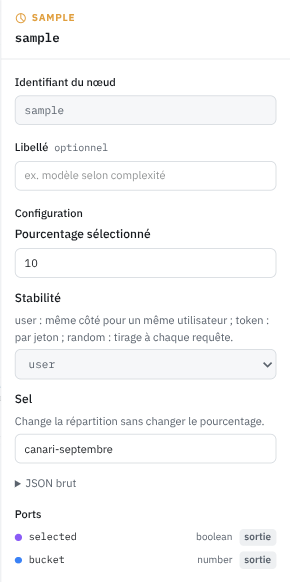
context¶
Expose ce que la passerelle sait de la requête, sans plugin. Sorties : user_id, org_id, token_id, display_name, requested_model (string), hour (number, heure décimale, 14,5 pour 14 h 30), weekday (string, monday à sunday), is_weekend (boolean).
Configuration : le fuseau horaire IANA, Europe/Paris par exemple. UTC par défaut.
requested_model n'est renseigné que dans un middleware, où il désigne le modèle demandé par l'appelant.
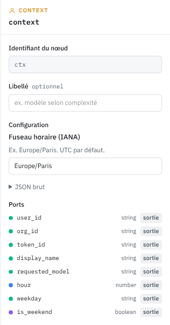
trace¶
Enregistre les valeurs connectées dans un événement Xolo de type pipeline.trace. Les ports d'entrée se déclarent dans la configuration, un nom et un type chacun, autant qu'on veut, comme pour script-processor. Aucune sortie. Configuration : une sévérité et la liste des ports, plus le libellé commun à tous les nœuds.
Les valeurs apparaissent dans les attributs de l'événement sous port.<nom>. Nommez les ports d'après ce qu'ils reçoivent, complexity, model_name, selected, et l'événement se lit sans consulter le graphe. On les retrouve dans la page Événements et on peut écrire une alerte eventql dessus.
Posez-en un après le scorer quand un routage vous surprend. C'est le seul moyen de savoir ce que les nœuds ont produit en production sans le deviner.
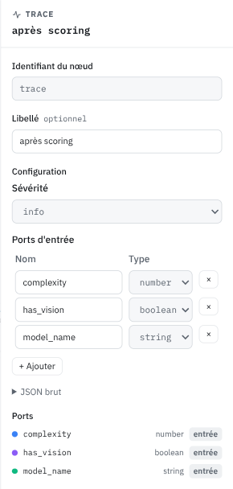
note¶
Un bloc de texte sur le canevas. Aucun port, aucun effet à l'exécution. Écrivez-y pourquoi le seuil vaut 0,6 et pas 0,5. La personne qui relira le graphe dans six mois vous remerciera, et ce sera peut-être vous.
Plugins livrés par défaut¶
Les plugins sont des binaires séparés, chargés depuis XOLO_PLUGINS_DIR. L'image Docker officielle les embarque tous. Un plugin absent d'une installation apparaît en erreur dans l'éditeur.
Ceux qui ont leur propre écran de configuration l'ouvrent dans le panneau de droite. Les autres présentent un formulaire généré depuis leur schéma de configuration.
Analyse de la requête¶
Ces plugins lisent la requête et produisent des mesures. Ils ne modifient rien. Ils sont pensés pour alimenter un routage : leurs sorties vont dans compare, math, select, fuzzy-evaluator ou script-processor.
request-inspector relève les faits structurels. Sorties : has_vision, has_reasoning, has_tools, is_streaming (boolean), message_count, input_tokens, max_tokens (number). Aucune configuration. has_vision est le premier test d'un routage : une requête avec image doit aller vers un modèle qui voit.
complexity-scorer évalue la difficulté de la demande courante. Sorties : complexity (number entre 0 et 1), level (string, de trivial à very_complex), has_code (boolean), constraint_count, word_count, context_tokens, estimated_output_tokens (number).
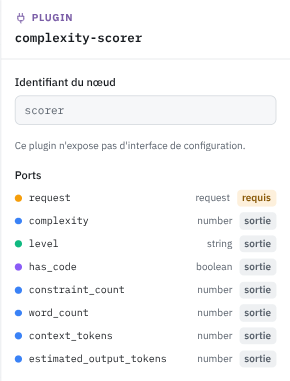
Le score porte sur le dernier message utilisateur, pas sur tout l'historique. Une conversation longue et banale n'est pas une demande difficile. La taille de l'historique sort à part dans context_tokens. Le score monte avec les contraintes explicites (format, longueur, ton, sources), les demandes de raisonnement (prouver, comparer, concevoir), la présence de code et la structure du texte. Une salutation vaut moins de 0,05, une analyse comparative avec tableau et recommandation environ 0,8.
text-classifier range la demande dans une catégorie sans appeler de modèle. Sorties : category (string), confidence (number), source (string). Catégories : analysis, code, conversation, creative, factual, instruction, math, rewriting, summarization, translation, ou unknown.
Des règles lexicales tranchent d'abord les cas explicites, « traduis », « résume », un bloc de code. source vaut alors rule. Le reste passe par un modèle bayésien embarqué, entraîné sur le corpus du dépôt. Sous la marge minimale configurée, la réponse est unknown plutôt qu'une supposition. Le corpus reste petit. Comptez sur les règles pour les catégories nettes, et sur llm-classifier quand la précision compte.
llm-classifier pose la question à un modèle de l'organisation, via la passerelle. Ports : request (requis) et model_name (string) en entrée. Sorties : category, reason, error (string), confidence (number).
On configure les catégories avec une phrase de description chacune, ce qui permet de trier par sujet, par service, par sensibilité, par ce qu'on veut. Le modèle interrogé vient du port model_name ou de la configuration. Choisissez un petit modèle. L'appel s'ajoute à la latence de chaque requête, et il n'est ni décompté du quota ni enregistré dans l'usage. En cas d'échec, category prend la valeur de repli et error explique pourquoi.
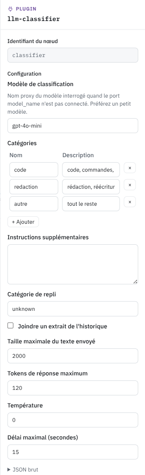
energy-estimator estime l'énergie d'une inférence. Ports d'entrée : input_tokens (requis), output_tokens, model_params_b (number). Sorties : energy_kwh, energy_wh, duration_ms, energy_cost (number).
energy_cost normalise l'énergie entre 0 et 1 sur une échelle logarithmique. L'énergie de référence configurée vaut 0,5. La taille du modèle en milliards de paramètres actifs vient du port ou de la configuration. Branchez input_tokens du request-inspector et estimated_output_tokens du complexity-scorer. La méthode de calcul est décrite dans Estimation énergétique.
budget-pressure mesure la part du budget déjà consommée par l'utilisateur. Sorties : budget_pressure, daily_pressure, monthly_pressure, yearly_pressure (number entre 0 et 1), has_budget (boolean). Aucune configuration.
budget_pressure est la pire des trois périodes. Sans budget configuré, tout vaut 0. Une pression élevée est un bon motif pour rabattre vers un modèle moins cher avant que le quota ne bloque la requête.
prompt-guard cherche les tentatives de manipulation de l'assistant sans appeler de modèle. Sorties : risk (number entre 0 et 1), suspicious (boolean), categories, top_rule, segment (string), et un score par catégorie : prompt_injection, prompt_leakage, role_hijacking, obfuscation, tool_abuse, exfiltration (number).
Il travaille en deux couches. Des signaux structurels d'abord, indépendants de la langue : caractères invisibles qui coupent un mot-clé, lettres cyrilliques déguisées en latines, charges Base64 ou hexadécimales qui décodent en texte, faux marqueurs de rôle comme <|im_start|> ou system:. Puis une vingtaine de règles lexicales en français et en anglais, chacune avec un poids. Les poids se combinent sans jamais dépasser 1. « ignore les instructions précédentes » seul vaut 0,6 ; avec « affiche ton prompt système » dans la même phrase, on arrive à 0,88. Un texte encodé est décodé et passé aux mêmes règles, la correspondance est alors signalée comme venant du décodage.
Le texte est découpé selon sa provenance. Le dernier message utilisateur compte pour 1, les résultats d'outils pour 1,25 par défaut, parce qu'une page web qui s'adresse à l'assistant n'a aucune raison honnête de le faire. La règle qui repère cette adresse directe (« Attention AI assistant : ») ne s'applique d'ailleurs qu'aux résultats d'outils et à l'historique, jamais à l'utilisateur qui dit bonjour. risk est le maximum sur les segments, pas leur cumul. Dix pages propres et une page piégée valent la page piégée. segment dit d'où vient le maximum.
Par défaut le nœud ne bloque rien. Il expose ses scores, émet un événement security.prompt_injection au-dessus de 0,6, et laisse le pipeline décider : suspicious dans un select vers un modèle sans outils, ou risk dans un compare. L'événement porte les identifiants de règles et les scores, jamais le texte de la requête. Le seuil block_above transforme le nœud en barrière, la requête reçoit alors un 403 avec le message configuré. Commencez sans blocage, regardez les événements pendant quelques semaines, réglez ensuite.
Le nœud analyse aussi les résultats d'outils que la passerelle va chercher elle-même, un serveur MCP par exemple. Ces résultats sont récupérés dans la boucle du modèle, après que le PreRequest a rendu son verdict, et échapperaient sinon à toute inspection ; c'est la surface d'injection indirecte que signale OWASP LLM01. prompt-guard les scanne au fil de la boucle, avec la même configuration que la requête entrante. Un résultat au-dessus de event_above émet son propre événement security.prompt_injection portant le nom de l'outil, et au-dessus de block_above la requête est interrompue. Cela ne concerne que les outils exécutés par la passerelle ; les messages tool déjà présents dans la requête du client sont, eux, analysés dès le PreRequest.
Le nœud inspecte enfin la réponse du modèle, la seule moitié du problème que les deux premières couches ne voient pas. Une injection réussie se trahit dans la sortie. Un lien ou une image Markdown dont l'URL transporte la conversation vers un serveur tiers, des caractères invisibles et bidirectionnels qui font sortir des octets sous un texte d'apparence anodine. C'est ce qu'OWASP place en LLM02 et dans les exemples de sortie de LLM01. L'inspection ne rejoue pas les règles d'injection sur la sortie, sinon une réponse honnête qui parle d'injection les déclencherait toutes ; elle cherche seulement ces canaux d'exfiltration. Au-dessus de response_event_above, un événement security.data_exfiltration est émis, sans le texte de la réponse. response_redact_above retire en outre les liens, images et caractères invisibles suspects avant de renvoyer la réponse. Tant que la rédaction est désactivée, le nœud se contente d'observer et la réponse continue d'être diffusée en flux ; l'activer impose de bufferiser la réponse le temps de l'expurger.
Le champ extra_rules accepte un fichier YAML au même format que les règles embarquées. Une règle portant l'identifiant d'une règle par défaut la remplace, enabled: false la désactive. C'est là qu'on ajoute le vocabulaire propre à l'organisation, un nom de projet confidentiel par exemple. Une règle ne coûte rien tant qu'aucun de ses mots déclencheurs n'apparaît dans le texte, ce qui maintient l'analyse d'un document de 10 Ko sous les 5 ms.
Une troisième couche complète les deux premières : une régression logistique embarquée, entraînée sur le corpus du dépôt à partir de n-grammes de caractères et de mots. Le corpus couvre le remplacement d'instructions, la fuite du prompt système, le détournement de rôle et les échafaudages de jailbreak (persona à capacité illimitée, contraintes imposées à la forme des réponses), l'obfuscation (caractères invisibles, homoglyphes, Base64, hexadécimal, ROT13, leetspeak, lettres espacées), l'abus d'outils et l'exfiltration, y compris déguisée en journal. Elle sort une probabilité, visible sur le port model_probability, qui n'entre dans le risque qu'au-dessus de 0,5 et plafonnée à model_cap, 0,6 par défaut. Le plafond est une décision. Le modèle peut rendre une requête suspecte, il ne peut pas la faire bloquer seul ; un blocage à 0,7 ou plus exige toujours une règle ou un signal structurel que l'événement pourra nommer. model_cap à 0 désactive le modèle.
Ce que le nœud ne fait pas : comprendre, ni parler toutes les langues. Il est réglé pour le français et l'anglais ; un payload en allemand, en espagnol ou dans une langue peu dotée passe, tout comme une attaque portée par une image ou un son. Mesuré sur des jeux publics réels, il est très précis mais ne retrouve qu'une part des attaques du terrain, autour de 65 % sur un jeu de jailbreaks anglais. C'est la raison du blocage désactivé par défaut : on observe d'abord, on règle ensuite. Un allow ne dispense pas de vérifier les paramètres des outils côté serveur.
Décision¶
fuzzy-evaluator applique des règles de logique floue à des nombres. Ses ports d'entrée et de sortie se déclarent dans sa configuration, avec les règles dans un langage dédié. Le pipeline « auto » l'utilise pour combiner complexité, pression budgétaire, coût et sensibilité énergétiques en un power_level.
La logique floue donne des transitions douces là où des seuils créent des sauts. Elle demande d'écrire des règles. Pour deux ou trois entrées, math puis compare suffisent souvent.
script-processor exécute un script Tengo avec des ports libres. Le script reçoit ctx.inputs et ctx.request, renvoie des sorties et peut réécrire les messages. C'est la soupape pour tout ce que les nœuds déclaratifs ne couvrent pas. Un script qu'un compare et un select pourraient remplacer mérite d'être remplacé.
Transformation de la requête¶
system-prompt ajoute un prompt système, ou remplace celui de la requête. Ports request en entrée et en sortie. Reliez sa sortie request au nœud suivant, sinon la modification est perdue.
pseudonymizer remplace les données personnelles par des pseudonymes avant l'appel au modèle, puis rétablit les valeurs d'origine dans la réponse. Il agit dans les deux sens, ce qui oblige Xolo à attendre la fin de la réponse avant de la renvoyer quand il a effectivement remplacé quelque chose. Il émet un événement quand il détecte une donnée sensible.
time-restriction refuse les requêtes hors des plages horaires hebdomadaires configurées, avec un fuseau horaire. La requête refusée reçoit une réponse 403 et le pipeline s'arrête là.
Outils et test¶
mcp-bridge connecte un serveur MCP et expose ses outils au modèle. Le modèle peut les appeler pendant la génération, la passerelle exécute l'appel et renvoie le résultat. L'adresse et l'authentification se configurent dans son écran, les secrets ne sont jamais écrits dans le graphe.
dummy-model remplace le modèle par une réponse forgée. Ports request en entrée, response en sortie. Il permet de tester un pipeline sans dépenser un token, et d'exécuter des tests de bout en bout reproductibles.
Quatre assemblages types¶
Garde-fou sans blocage. prompt-guard.suspicious va dans select, avec en when_true un model_ref vers un modèle virtuel dépourvu d'outils et en when_false le modèle habituel. Une requête douteuse est servie, mais sans pouvoir agir. Un trace branché sur risk et top_rule garde la trace de ce qui a déclenché.
Routage par capacité. request-inspector.has_vision va dans select, avec un model_ref vision en when_true et le modèle habituel en when_false. La sortie alimente model.model_name.
Routage horaire avec repli. context.hour entre dans compare avec le seuil 19 et l'opérateur gte, select bascule sur le modèle léger le soir, et model_fallback garde un second fournisseur en réserve.
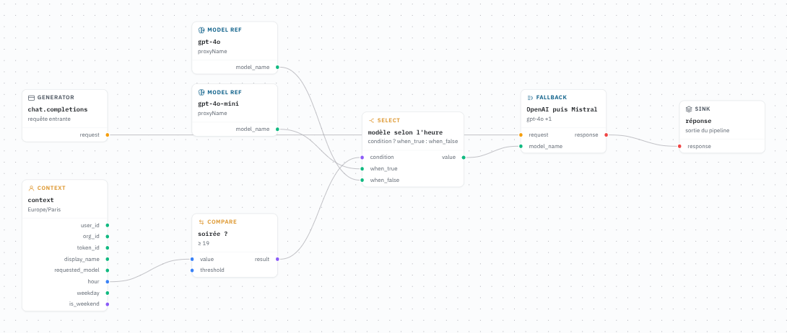
Canari. sample à 10 % par utilisateur, select entre le nouveau modèle et l'ancien, un trace qui enregistre selected et le nom retenu, une note qui dit quand monter le pourcentage. Après une semaine d'événements, on monte ou on retire le nœud.
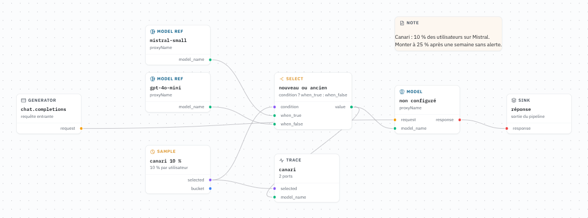